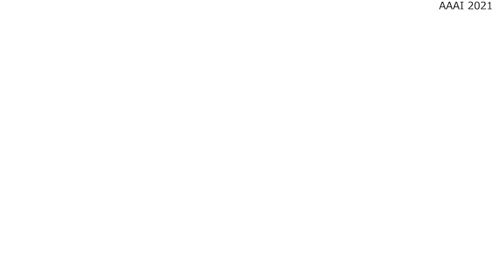

What is FixMyPose/फिक्समाइपोज़?
FixMyPose is a new captioning dataset for learning how to write pose correctional descriptions and target pose identification.
Agents are given two tasks, Pose Correctional Captioning and Target Pose Retrieval. In the Pose Correctional Captioning task, agents should write
correctional descriptions on how a person shown in the current image can move to reach the pose of the person shown in the target image.
During the Target Pose Retrieval task, agents are given the current image and a natural language correctional description and are asked
to identify what the target image should be. In both cases, agents require a deep understanding of object referring expressions, 3D depth, and spatial relationships
in order to successfully complete the task.

Paper / Code / Dataset
Citation
If you use FixMyPose please cite our paper with this BibTeX entry.
@inproceedings{Kim2021FixMyPosePC,
title={FixMyPose: Pose Correctional Captioning and Retrieval},
author={Hyounghun Kim and Abhaysinh Zala and Graham Burri and M. Bansal},
booktitle={AAAI},
year={2021}
}
Pose Correctional Captioning Score List
Please contact fixmypose.unc@gmail.com for the test-unseen split.
| Rank | Model | Code | Language | Automated Metrics | Task-Specific Metrics | ||||||
|---|---|---|---|---|---|---|---|---|---|---|---|
| B4 | C | M | R | OM | BM | DM | |||||
|
1
September 9th, 2020 |
Baseline Model
UNC Chapel Hill (Kim, Zala, et al. 2020) |
Github | English | 17.26 | 6.40 | 21.30 | 34.82 | 0.04 | 1.42 | 0.17 | |
| Hindi | 18.98 | 6.69 | 28.47 | 34.53 | 0.03 | 1.52 | 0.11 | ||||
Target Pose Retrieval Score List
| Rank | Model | Code | Accuracy (%) | |
|---|---|---|---|---|
| English | Hindi | |||
|
1
September 9th, 2020 |
Baseline Model
UNC Chapel Hill (Kim, Zala, et al. 2020) |
Github | 38.49 | 37.84 |